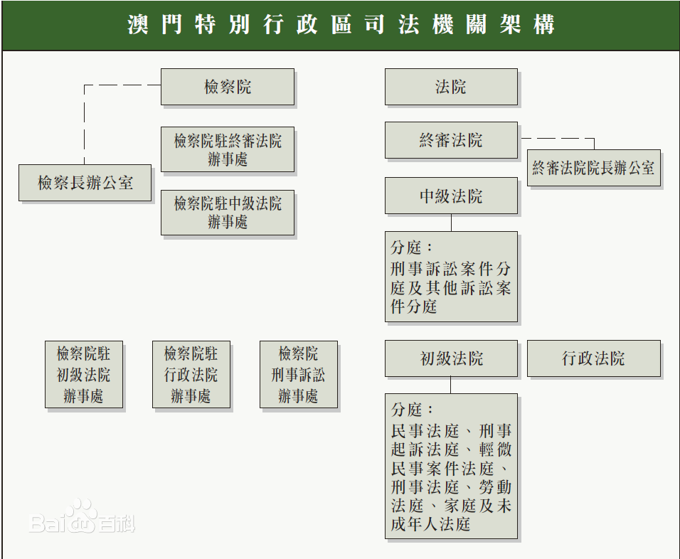

自1999年12月20日起，澳门成为中华人民共和国的特别行政区，澳门特区的宪制文件《中华人民共和国澳门特别行政区基本法》也同时开始实施。 |
| 一国两制，即“一个国家，两种制度”，是中国政府为实现国家和平统一而提出的基本国策。按照邓小平的论述，“一国两制”是指在一个中国的前提下，国家的主体坚持社会主义制度，香港、澳门、台湾保持原有的资本主义制度长期不变。 [1] “一国两制”是邓小平同志提出的具有中国特色社会主义理论之一，是为解决台湾问题，恢复对香港、澳门行使主权，实现祖国和平统一而提出的重大战略决策和科学构想 习近平主席指出：“‘一国’是根，根深才能叶茂；‘一国’是本，本固才能枝荣。”回归20年来，澳门特别行政区全面准确理解和贯彻“一国两制”方针，正确认识并妥善处理“一国”与“两制”的关系，坚守“一国”之本，善用“两制”之利，真正实现了与祖国内地相互促进、共同发展。实践充分表明，只有在全社会形成广泛的国家认同，才能全面准确地实施基本法；只有切实维护国家主权、安全、发展利益，才能保持澳门的长期繁荣稳定；只有积极融入国家发展大局，才能使澳门走向更美好的未来。实践雄辩地证明，“一国两制”是解决历史遗留的澳门问题的最佳方案，也是澳门回归后保持长期繁荣稳定的最佳制度，是行得通、办得到、得人心的！ |
| 澳门特别行政区的法律制度，建立在法治和司法独立的基础上。根据“一国两制”的原则，特区的法律制度以大陆法为根基。 [35] 《中华人民共和国澳门特别行政区基本法》是澳门特别行政区的宪制性文件，由全国人民代表大会根据《中华人民共和国宪法》制定通过，《基本法》规定澳门特别行政区实行的制度，确保国家对澳门的基本方针政策得以实施。澳门特别行政区的制度和政策，包括社会、经济制度、有关保障居民基本权利和自由的制度、行政管理、立法和司法方面的制度，以及有关政策，均以《基本法》的规定为依据。 [34-35] 澳门特别行政区原有的法律、法令、行政法规和其它规范性文件，只要不抵触《基本法》，仍继续生效。《刑法典》、《刑事诉讼法典》、《民法典》、《民事诉讼法典》、《商法典》是澳门法律体系的重要组成部分。有关国防、外交及其它在澳门特区自治范围以外的事务的全国性法律，可由特区公布或自行立法，在澳门施行。 [35] 根据《中华人民共和国澳门特别行政区基本法》及《中华人民共和国澳门特别行政区司法组织纲要法》规定，特区设有两个独立的司法机关，分别是行使审判权的法院和行使检察权的检察院，澳门特别行政区享有独立的司法权和终审权。法院独立进行审判，只服从法律，不受任何干涉。 [14] [34-35] 澳门特区法官依法进行审判，不听从任何命令或指示，但《中华人民共和国澳门特别行政区基本法》第19条规定的情况除外。法官履行审判职责的行为不受法律追究。特区检察院独立行使法律赋予的检察职能，不受任何干涉。 [35] 根据《中华人民共和国澳门特别行政区基本法》和《司法组织纲要法》设置的特区三级法院体制，在澳门特别行政区成立后随即全面运作。澳门特区成立后，设立组成第一审法院的初级法院及行政法院，并由其行使《中华人民共和国澳门特别行政区基本法》赋予的审判权。 [35] 澳门特别行政区设有初级法院、中级法院和终审法院。澳门的终审权属于特别行政区终审法院。法院的组织、职权和运作由法律规定。而初级法院可根据需要设立若干专门法庭。特区继续保留原刑事起诉法庭的制度。 [14] 各级法院的法官，根据由法官、律师和知名人士组成的独立委员会推荐，由行政长官任命。选用法官以其专业资格为标准，符合标准的外籍法官也可聘用。有多名资深葡人法官在各级法院服务。各级法院的院长由行政长官从法官中选任。终审法院院长由特别行政区永久性居民中的中国公民担任。 [14] [27] |  |